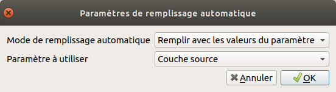

XI. Automatisation de traitements
XI.2 Exécuter un outil « par lot »
L'outil de découpage est accessible via la boîte à outils ; tous les outils de cette boîte peuvent être exécutés par lot.
Pour lancer l'outil de découpage en mode « par lot » : dans la boîte à outils, clic droit sur Couper → Exécuter comme processus de lot...
Dans la fenêtre qui s'ouvre, chaque ligne correspond à une instance de l'outil. Chaque colonne correspond à un paramètre : la 1ère colonne à la couche en entrée, la 2ème à la couche de découpage (masque), la 3ème à la couche qui sera créée.
Pour remplir chacune des colonnes :
- Couche source : sur la première ligne, cliquer sur Auto-remplissage… → Sélectionner à partir des couches chargées et cochez les 4 couches OSM à découper (si ces couches n'étaient pas chargées dans QGIS, utiliser l'option Sélectionner des fichiers).
- Supprimez ensuite la ligne créée par défaut (remplie avec SAINTE_RADEGONDE pour les 2 1ères colonnes) : il faut la sélectionner en cliquant sur son numéro de ligne (2) puis cliquer sur le bouton Supprimer la/les ligne(s) (signe « - » rouge)
- Couche de superposition : par défaut cette colonne devrait déjà être remplie correctement avec SAINTE_RADEGONDE. Si ça n'était pas le cas, sélectionnez SAINTE_RADEGONDE sur la ligne 2, puis cliquez sur Auto-remplissage… → Remplir
- Découpé : cliquer sur les … de la ligne 2, rendez-vous dans le dossier où vous voulez créer les nouvelles couches, tapez decoupe_ et cliquez sur Enregistrer. Dans la fenêtre suivante : choisir Remplir avec les valeurs du paramètre, Couche source  , afin que le nom de chaque couche qui sera créée soit complété par le nom de la couche OSM de départ.
N'oubliez pas de cocher la case Charger les couches pour que les couches résultat soient automatiquement ajoutées à QGIS.
Au final, vous devez obtenir quelque chose de similaire à ceci (cliquez sur l'image pour la voir en plus grand) :
{kind=link}
Cliquer sur Exécuter, patienter… Les 4 couches sont créées et ajoutées à QGIS.
Tous les outils de la boîte Traitements sont exécutables par lot.
Mais comment faire maintenant si on doit répéter plusieurs fois une chaîne de traitement, par exemple découper une couche par une autre puis modifier son SCR ?
chapitre précédent chapitre suivant
haut de page